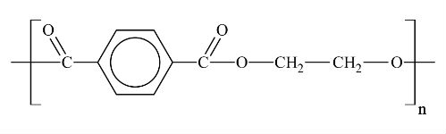

ESTRUCTURA DEL PET
El PET es un polímero lineal semicristalino, cuya fórmula química es C10H8O4 y se representa como (C10H8O4)n, donde "n" indica que es un polímero formado por la repetición de unidades estructurales. Este material, caracterizado por ser transparente, resistente y liviano, es usado comúnmente en botellas y envases.
<

PROPIEDADES